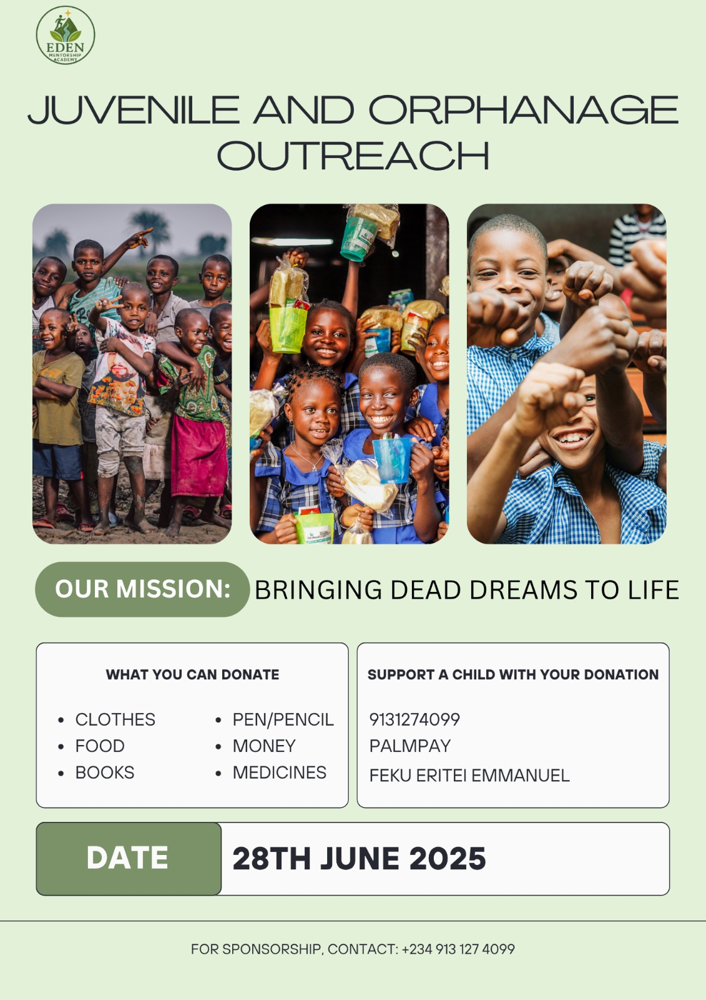
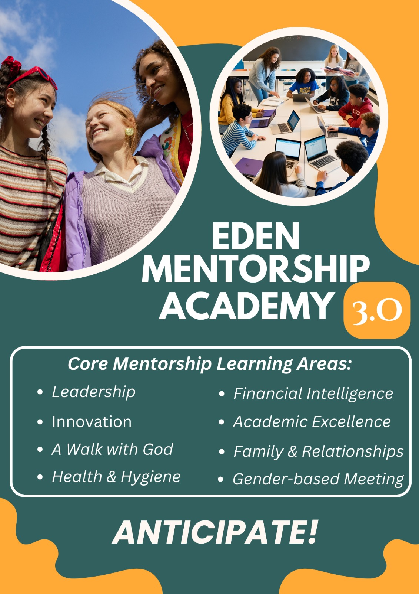
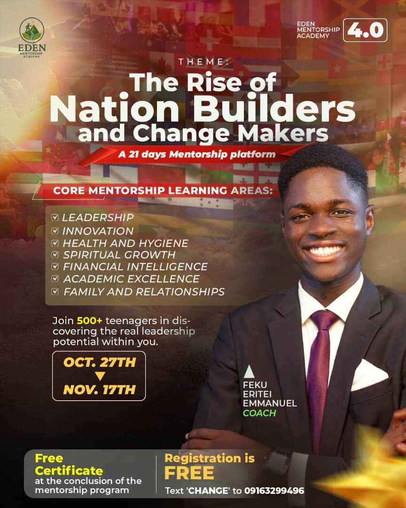

Our Vision & Mission
At Eden, we believe transformation happens through mentorship, accountability, community, discipline, and intentional growth.
Leadership
Mentorship
Spiritual Growth
Creativity
Discipline
Community
Purpose Discovery
Raising Innovative Young Leaders
Eden Mentorship Academy is building a generation of disciplined, purpose-driven, spiritually grounded, and innovative young people prepared to create impact in their communities and beyond.



